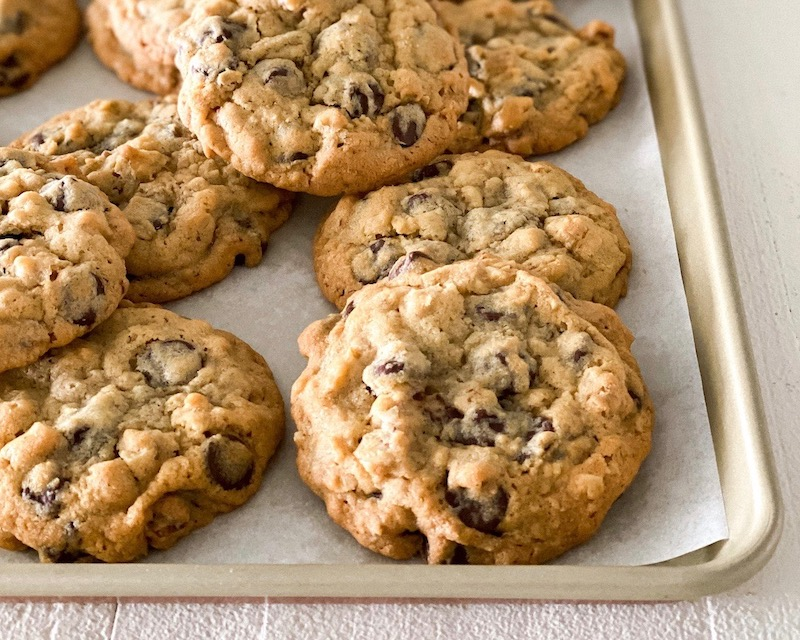

INGREDIENTS:
- ½ Pound butter, softened
- ¾ Cup + 1 tablespoon granulated sugar
- ¾ Cup packed light brown sugar
- 2 Large eggs
- 1 ¼ Teaspoons vanilla extract
- ¼ Teaspoon freshly squeezed lemon juice
- 2 ¼ Cups flour
- ½ Cup rolled oats
- 1 Teaspoon baking soda
- Teaspoon salt
- Pinch cinnamon
- 2 ⅔ Cups Nestle Tollhouse semi-sweet chocolate chips
- 1 ¾ Cups chopped walnuts
BAKING INSTRUCTIONS:
Cream butter, sugar and brown sugar in the bowl of a stand mixer on medium speed for about 2 minutes. Add eggs, vanilla and lemon juice, blending with mixer on low speed for 30 seconds, then medium speed for about 2 minutes, or until light and fluffy, scraping down bowl.
With mixer on low speed, add flour, oats, baking soda, salt and cinnamon, blending for about 45 seconds. Don’t over-mix. Remove bowl from mixer and stir in chocolate chips and walnuts.
Portion dough with a scoop (about 3 tablespoons) onto a baking sheet lined with parchment paper about 2 inches apart. Preheat oven to 300 degrees F. Bake for 20 to 23 minutes, or until edges are golden brown and center is still soft. Remove from oven and cool on baking sheet for about 1 hour.
Cook’s note: You can freeze the unbaked cookies, and there’s no need to thaw. Preheat oven to 300 degrees F and place frozen cookies on parchment paper-lined baking sheet about 2 inches apart. Bake until edges are golden brown and center is still soft.
YOUTUBE VIDEO:
Here is a video walk-through that shows how to make DoubleTree Cookies:
FRUIT CONSUMPTION CHART:

Back to Top